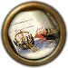

海战（Naval warfare）是交战双方赢得制海权最重要的手段。虽然大部分战争都是在陆地上进行，海战可以对敌方贸易，殖民，海外扩张等方面造成巨大的伤害。
海战界面
就像陆战一样，海战会在两支舰队在同一海区遭遇时爆发。而且会像陆战一样持续许多天，所以这种情况应该被理解为双方舰队在占据有力风向，对峙，小规模战斗之后终于迎来决战的时刻。
在欧陆风云中，战斗不需要玩家的参与，但战斗界面现在会显示出更多的信息，例如船只交战的目标。
海战界面显示了交战双方舰队的总体实力。战斗开始时，双方先进行火力伤害阶段，之后便会以类似撞击等行为进入冲击伤害阶段。这两阶段会一直重复到其中一方撤退或失去所有的船只或士气。每艘船的状态以百分比显示在界面上，把鼠标放在上面便可看见该战舰正在攻击的敌军，士气，耐久和船只类型。
部署
舰队组成
- 主条目：海军#组成部分
舰队的移动速度由最慢的船只决定，所以一般并不推荐混合舰队，除非需要大船护卫例如运输船之类的小船。桨帆战舰在内海的战斗力加倍，而运输船可以运送陆军单位。
接战宽度
接战宽度（英文：Engagement Width）在1.16 版本引入，指海战的战争宽度。与陆战的"战线宽度"不同的是，海战中两个参与者的"战斗宽度"是独立的，这意味着一个参与者可以比另一个参与者有着更宽的战斗宽度，重型战舰占用3的战斗宽度。商船和桨帆，运输船分别占用1、0.5、1的战宽。
海战的基础宽度为20，船队的旗舰有“改良瞭望台”修正增加3的接战宽度，更多修正来自下列：
- 海军将领的
 机动值，每点 +10%
机动值，每点 +10% - 近海作战 -20%
- 提升外交科技
- 增加接战宽度
- +20%“海军交战” 大革命时代能力
- +10% 每点海军将领的机动技能
- +10% 启动了海军霸权
- 政策
- +20% 海军-探索 训练有素的制图师
- +10% 海军-行政 海军学校法案
战斗序列
和陆战差不多，当两支敌对舰队在同一海区接触时，海战便会开始。海战会持续许多天并会在其中一方撤退或被消灭后结束。1.16版本推出了海军战斗宽度的概念，和陆军的差不多，都限制了在同一时间可以交战的船只数量。
交战(Engagement)
当发生海战时，舰队的船会去占满战宽直到上限被填满，按以下顺序排列
- 重型船
- 桨帆船
- 轻型船
- 运输船
- 任何已经脱离的船会被忽视。
阶段
战斗被分为一系列持续3天的阶段。这些阶段分为火力和冲击，火力阶段先开始。
目标选择
在战斗中，每艘船都会试图对敌舰进行攻击。每艘敌舰有基础权重10的机会被攻击，进一步修正为：
- + 0 到 + 5 随机
- + 5 若敌舰为同类型单位
- × 0.1 若士气为0及以下
- × 2 若所受损害在50%以下
选择得分最高的敌舰将被作为目标。如果前一个目标即将被消灭，将选择一个新的目标。
骰子
在每个阶段的开始，每一方滚动一次骰子。该结果用于确定在该阶段的每一天中，该方造成的士气损害和船体损坏。
耐久伤害
基础损伤遵循以下计算公式：
基本耐久损伤 = 0.0025 + 0.025 ×（2 + 骰子点数 + 战斗点数修正）
战舰的火炮数量会影响船体的损坏程度，而防御方的船体耐久决定了它能承受多长时间的炮火。
火炮火力修正根据进攻方或防守方拥有科技优势与否会增加或减少造成的伤害。
- 攻击单位修正：本攻击修正由攻击方的科技决定，例如"火炮火力"。
火炮活力修正点数 = 进攻方火力点数 - 目标火力点数
- 攻击单位的作战能力：攻击单位的作战能力增益。
最终伤害 = 0.03 × 基础耐久损伤 × 船只优势 ×（火炮数 / 目标船体）×（1 + 0.05 × 火炮火力修正）×（1 + 船只战斗修正 + 提督战斗修正）/（1 + 目标船只耐久）
如果目标船士气为0或以下，则最终伤害乘以10。
在内海作战的桨帆船造成的最终伤害增加一倍。
士气损耗
海军士气不仅在战斗中就会降低，还会在友军船只沉没时降低。以下是士气损耗公式：
基本士气损耗 = 0.25 × （国家海军士气 / 3）× 基本船体损伤 × 船只优势 ×（火炮数量 / 目标船体）× （1 + 0.005 × 炮兵火力修正）×（1 + 船只战斗修正 + 提督战斗修正）
下列理念与政策会影响友军船只沉没时对我方的士气打击：
- +10% 海军将领有头脑冷静的特性
脱离战斗
任何船只少于0.5士气时会争取脱离战斗，能否成功的脱离战斗取决于船只的逃脱几率，基础的逃脱几率为3%，但他可以被一些国家理念修正
- 澳大利亚理念5 +5%
- 丹麦理念3 +5%
- 葡萄牙理念1 +5%
战斗统计
 外交科技对海军的叠加效果
外交科技对海军的叠加效果
| 外交科技等级 | 0 | 2 | 3 | 7 | 8 | 12 | 18 | 22 | 24 | 25 | 27 | 29 | 31 |
|---|---|---|---|---|---|---|---|---|---|---|---|---|---|
| 海军士气 | +2.0 | +0.1 | +0.3 | +0.2 | +0.4 | +0.5 | +0.5 | +0.5 | +0.5 | +0.5 | +0.5 | ||
| 海战宽度 | 5 | +20 | +10 | +15 | +10 | +5 | +10 |
 军事科技对海军的叠加效果
军事科技对海军的叠加效果
| 军事科技等级 | 0 | 7 | 13 | 16 | 22 | 25 | 32 |
|---|---|---|---|---|---|---|---|
| 炮兵火力 | +0.0 | +1.0 | +1.4 | +2.4 | +4.4 | +6.4 | +8.4 |
最大海军士气
下列数值会影响最大海军士气的数值。
| 因素 | 数值 | |
|---|---|---|
| 海军维护费 | 最少海军维护费（0）时 20% | |
| 最大海军维护费时 100%（乘法修正） | ||
| 海军传统 | 100海军传统时 +25% | |
| 威望 | 100威望时 +10%，-100威望时 -10% | |
| 力量投射 | +10%处于100力量投射时 | |
| 海军改革者顾问 | +10% | |
| 信仰守护者 | +5% | |
| 破产 | -50% | |
| 厌战度 | -2%每一点厌战度 | |
特定的国家理念，理念组和政策都会增加海军士气。
| 传统 | 理念 | 奖励/野心 | 政策 | |
|---|---|---|---|---|
| +20% |
|
|
|
|
| +15% |
|
|
|
— |
| +10% |
|
|
— |
|
每点海军传统也会增加海军士气恢复0.10%
作战能力
作战能力是一个提升单位耐久伤害和士气伤害的一个值。作战能力只会对其特定单位有效。
重型船只作战能力
| 传统 | 理念 | 奖励/野心 | 政策 | |
|---|---|---|---|---|
| +20% | — |
|
— | — |
| +15% |
|
— | — | — |
| +10% | — |
|
|
|
轻型船只作战能力
| 传统 | 理念 | 奖励/野心 | 政策 | |
|---|---|---|---|---|
| +25% | — | — |
|
— |
| +15% |
|
|
|
|
| +10% |
|
|
— | — |
桨帆战舰作战能力
| 传统 | 理念 | 奖励/野心 | 政策 | |
|---|---|---|---|---|
| +25% | — |
|
|
— |
| +20% |
|
|
— | — |
| +15% | — |
|
— |
|
| +10% | — |
|
— | — |
运输船作战能力
| 传统 | 理念 | 奖励/野心 | 政策 | |
|---|---|---|---|---|
| 自1.26版本以来没有理念或政策拥有修正「transport combat ability」。 | ||||
单位点数
- 主条目：海军单位
每艘船都有三个值： 耐久度、
耐久度、 火炮数量和
火炮数量和  移动速度。
移动速度。
耐久值代表血量，火炮数量代表攻击力。除开士气，每个战斗阶段双方都会用耐久/火炮值来对抗以算出每个战斗阶段中耐久度遭受的伤害。
将领能力值
海军将领有几个最高为6的能力值，其数值越高越好：
 火力
火力
 冲击
将领的能力值在其相应的阶段加入骰子点数。
冲击
将领的能力值在其相应的阶段加入骰子点数。
| 传统 | 理念 | 奖励/野心 | 政策 | |
|---|---|---|---|---|
| +2 | — |
|
— | — |
| +1 | — |
|
|
|
| 传统 | 理念 | 奖励/野心 | 政策 | |
|---|---|---|---|---|
| +1 | — |
|
— |
|
海军将领的机动值影响了舰队在大地图上的移动速度。每一点还会在舰队被送去保护贸易时对所在贸易节点额外增加5%的贸易力量，还会降低 1%舰队遭受的损耗。
| 传统 | 理念 | 奖励/野心 | 政策 | |
|---|---|---|---|---|
| +1 |
|
|
— |
|
战斗结束
一场海战会其中一只舰队在发生以下条件时结束：
- 士气降至0
- 舰队撤出战斗
- 全灭
胜利之时，败军舰队中的船只可能会被捕获，这几率取决于双方舰队将领的机动值差距。总的来说，在无将领的舰队交战后，一般不会有任何捕获船只的机会，因为双方机动值都为0。
若败军舰队仍有船只残留，那么它们会一边向最近的友军港口逃窜一边恢复自身的士气。海战与陆战一样，可能会影响厌战度、战争得分、海军传统和威望。不过值得注意的是从海战中得到的战争分一般无法和陆军所得的相比。
部分理念会增加交战后捕获船只的几率:
士气与耐久度
士气
- "海军士气"重定向到这。增加最大海军士气的效果请见上面的最大海军士气。
士气是决定海战成败的重要因素。船只在每一个回合都会损失一部分的士气。当一支舰队的平均士气降至0时，这支舰队就会尝试撤退。在一个火力和冲击阶段完成前不可能撤退，所以一支舰队在这两个阶段完成前士气便降低至0的话便会被消灭。
如果一支舰队在低士气的状态下战败，那么它就会被强制撤退至最近的海区。撤退时，舰队无法在到达目标海区前战斗，控制或维修。但它可以在撤退过程中由正常速度恢复士气，不仅如此，它的移动速度还会加快50%。
记住每一场海战后都要花费一些时间让舰队恢复自身的士气。
士气恢复
当一艘船停靠在友军港口时，恢复其最大士气的10%。
特定的国家理念，理念组和政策都会增加海军士气恢复速度。
| 传统 | 理念 | 奖励/野心 | 政策 | |
|---|---|---|---|---|
| +5% | — | — | — |
|
每点海军传统都会增加 +0.1% 的海军士气恢复速度。
单位优势
单位优势是海战中十分重要的一个因素，桨帆战舰在内海获得100%优势的加成，下图里的淡蓝色海域即是内海。

船只修复
受到伤害的舰队可在本国，同盟，或有舰队停靠权的港口自动修复至最大耐久值。舰队界面有一个“修复损伤船只”的按钮可以让受损船只脱离舰队去最近的港口进行修复，当它们修复完成后会回到原舰队中。
- 主条目：海军#船只修复
海军学说
|
|
只适用于DLC统治吧，不列颠尼亚激活时。 |
一个国家如果有  至少20的海军上限，就可以选择一个“海军学说（英文：Naval Doctrine）”。选择一个海军学说，或者改变为另一个（任何时候都能做），花费该国的海军的
至少20的海军上限，就可以选择一个“海军学说（英文：Naval Doctrine）”。选择一个海军学说，或者改变为另一个（任何时候都能做），花费该国的海军的  0.1 金币每个
0.1 金币每个  水手（例如：
水手（例如：  5 每条轻型船或运输船，
5 每条轻型船或运输船， 10 每条桨帆船，以及
10 每条桨帆船，以及  20 每条重型船）。
20 每条重型船）。
学说列表：
| 学说 | 效果 | 注释 |
|---|---|---|
|
||
|
||
|
||
|
||
|
| |
|
需要 | |
|
| |
|
| |
|
| |
|
需要 | |
|
已完成 | |
|
| |
|
| |
|
| |
|
| |
|
| |
|
| |
|
| |
|
| |
|
| |
|
| |
|
| |
|
| |
|
| |
|
| |
|
| |
|
| |

Tactica 罗马海军战术 《战术》是综合总结罗马帝国陆军和海军经验而成的军事著作，其中总结的许多海军战术在中世纪之后依然十分有效。 |
|
|
|
| |
File:Mamluk Galleys.png
Mamluk Galleys 马穆鲁克桨帆战船 我们强大的桨帆船和能干的船员将统治大洋，为我们的名号增光添彩，使我们的徽记熠熠生辉。 |
|
|
File:Mamluk Merchant Vessels.png
Mamluk Merchant Vessels 马穆鲁克商船 我们无与伦比的商船队和能干的船员将统治大洋，为我们带来金银万两，让我们名扬天下。 |
|
|
File:Mamluk Warships.png
Mamluk Warships 马穆鲁克战舰 我们强大的战舰和能干的船员将统治大洋，为我们的名号增光添彩，使我们的徽记熠熠生辉。 |
|
|
File:Mamluk Transports.png
Mamluk Transports 马穆鲁克运输船 我们的运输船和能干的船员将统治大洋，为我们的名号增光添彩，使我们的徽记熠熠生辉。 |
|
|
舰队指令
开始巡逻
开始巡逻按钮让舰队开始循环被指定的移动命令。当它到达前一任务的终点时，就会返回巡逻的起点开始巡逻。巡逻路线可以包括港口停靠，巡逻在所有船只修复前停止。虽然同样的功能保护贸易的轻型船只舰队也能做，但巡逻不限制船只类型，贸易力量或贸易距离。
劫掠海岸
|
|
仅当DLC我们的海、黄金世纪或北方雄狮开启时可用。 |
劫掠海岸是一项海军能力，允许拥有该能力的国家的舰队劫掠其他非同信仰国家的海岸以获得  战利品（金币）和
战利品（金币）和  水手。这项能力可经由国家理念、政府改革等方式获得。部分国家除了不同信仰国家之外，还允许劫掠同信仰国家的海岸。
水手。这项能力可经由国家理念、政府改革等方式获得。部分国家除了不同信仰国家之外，还允许劫掠同信仰国家的海岸。
劫掠海岸可以提供显著的收入和水手池加成，并作为损害其他国家经济的一种手段。
一个例子是  宗家，通过不断劫掠
宗家，通过不断劫掠  大明的海岸可以叠高荒废度，甚至可能让其因此失去天命而崩溃。
大明的海岸可以叠高荒废度，甚至可能让其因此失去天命而崩溃。
条件

{kind=link}
{kind=link}
{kind=link}
{kind=link}
劫掠海岸是舰队在海上的可能行为。要劫掠一个海岸省份，需要满足以下条件：
- 这个国家…
- …有以下条件之一…
- …理念 “可以劫掠海岸”: 此表格可能已落后版本，最后更新于1.30
- …理念 “可以劫掠海岸”:
| 传统 | 理念 | 奖励/野心 | 政策 | |
|---|---|---|---|---|
| yes |
|
— | — | — |
- …理念 “可以劫掠海岸，包括同宗教的国家”: 此表格可能已落后版本，最后更新于1.30
- …理念 “可以劫掠海岸，包括同宗教的国家”:
| 传统 | 理念 | 奖励/野心 | 政策 | |
|---|---|---|---|---|
| （不可识别的修正类型「may raid coasts including coasts of countries with same religion」，请在Template:Bonus table处添加） | ||||
- …must be able to place a fleet in a sea tile adjacent to the province, but doesn't need to be able to blockade the port
- the target province…
- …must be no more than three sea tiles away from a province owned by the nation (cored or otherwise). This can be increased with the modifier “Coastal raiding range”
- …must have a development lower than or equal to the blockading power of the fleet
- …does not belong to a country which has a truce with the raiding nation
- …does not belong to a country which has the same religion as the raiding nation, unless the raiding nation is a Pirate Republic,
 诺曼底 or
诺曼底 or  索马里
索马里 - …does not have the religion of the raiding nation, unless the raiding nation is a Pirate Republic, 诺曼底 or 索马里
- …is not controlled by a “friend” (ally, subject of ally, in the same trade league, country with above 100 opinion) of the raiding nation
- …is not controlled by the overlord of the raiding nation or subjects of the overlord or subjects of the raiding nation
- …does not have the “Raided Coast” modifier
After a province has been raided, its loot bar is emptied, the amount of devastation is increased, and the modifier “Raided Coast” is applied for ten years. Each raided province will add a −25 relations penalty with the target country (up to a maximum of −100), decaying by +1 per year.
The efficiency of raiding is reduced by fleets on pirate hunting patrol.
When a coast is raided, the loot provided is as follows:
| Raided coast | Conditions |
|---|---|
|
per development (raided province) |
+ sailors
|
Local sailors per Raided provinces / 4 |
封锁
一只固定且没有其它任务的舰队会自动封锁敌对国或被敌对国占领的沿海省份。
封锁能力
舰队的封锁能力是在舰队界面 封锁标志中显示。封锁能力基本被舰队的  战术移动速度决定 。
战术移动速度决定 。
- [math]\displaystyle{ \text{封锁能力} = \frac{\sum\text{船只速度}}{3} \cdot \text{封锁效率} }[/math]
每一点封锁能力可以封锁省份的一点发展度。
封锁只会在封锁能力等于或高于省份发展度时才会有效。如果一支舰队没有足够的封锁能力去封锁相邻的被敌对省份，那么封锁的优先级为：
- 正在被友军围攻的敌对省份
- 最低发展度的敌对省份
- 最低发展度的敌对叛军省份
位于舰队界面的分离封锁按钮（）会分离足够封锁当前海区敌军省份的舰队 。
封锁效率
封锁效率由以下修正影响：
| 条件 | |
|---|---|
| +1% | 每一点 |
理念和政策：
| 传统 | 理念 | 奖励/野心 | 政策 | |
|---|---|---|---|---|
| +50% | — |
|
— |
|
| +33% | — |
|
|
— |
决议和事件：
| 事件修正 | 触发条件 | 持续时间 | |
|---|---|---|---|
| +20% | 封锁战术的改良 | 航海理念组事件：封锁战术的改良 | 10年 |
| −25% | 海军变得懒惰 | 航海理念组事件：海军变得懒惰
|
10年 |
封锁效果
封锁会对敌方占有的沿海省份造成一系列负面效果：
| +20% | 本地陆军招募时间 | |
| +20% | 本地海军建造时间 | |
| +0.25 | 月度荒废度 | |
| -100% | 本地贸易竞争力 |
需要额外注意的是，生产  香料的省份所提供的省份奖励恰好可以抵消封锁所带来的月度荒芜度增加。
被封锁的国家同时还会受到以下修正，修正的具体数值由所被封锁的总发展度比例（核心，省份)决定：
香料的省份所提供的省份奖励恰好可以抵消封锁所带来的月度荒芜度增加。
被封锁的国家同时还会受到以下修正，修正的具体数值由所被封锁的总发展度比例（核心，省份)决定：
| +0.10 | 月度厌战度 |
封锁还拥有以下影响：
- 围城： −2 未被封锁沿海省份围城惩罚，除非省份为未开发地带。（没有港口的沿岸省份不适用此项，例如里海沿岸的省份）
- 战争分数：封锁所带来的战争分数由所被封锁省份的发展度比例和当地自治度修正。拥有首都和堡垒的身份会占更多的分数。有些宣战理由将封锁省份作为战争目标。
- 战利品：封锁会获得被封锁省份的一部分收入，体现为增加
 金币至封锁者的国库中（收入列于“战利品”一栏内）
金币至封锁者的国库中（收入列于“战利品”一栏内） - 移动限制：参见 封锁海峡 章节。
封锁海峡
游戏中有些省份之间没有在陆地上直接接壤，而是隔海相望但通过虚线连接的形式接壤，这些虚线被称为海峡。
在战争时期，通过在海峡渡过的海域部署舰队，可以使得交战中的敌方无法通过海峡渡过海域，这被称之为封锁海峡。 交战时，一国仅能无条件通过自己或同盟实际控制海峡两侧省份的海峡。对于并没有实际控制海峡两侧省份的海峡，如果海域由己方或者无人控制，则可以通过；而如果海峡通过的海域由敌方控制则无法通过，这就是海峡被封锁的情况。
对于其他中立国家或同盟国家来说，可以任意通过已拥有军事通行权的海峡，不存在封锁海峡。
封锁海峡需满足以下条件：
- 敌方未实际控制海峡两侧省份；
- 使用舰队（数量不限）控制海峡通过的海域。
比如说：
- 一个国家控制海峡的两边：奥斯曼只要控制君士坦丁堡和科贾埃利，那么他可以随时无视封锁跨越博斯普鲁斯海峡。埃迪尔内到比加的海峡同理。
- 一个中立国家控制海峡的一侧：一个只和英格兰交战的爱尔兰国家不能跨越被英格兰控制的爱尔兰海至苏格兰的埃尔郡（苏格兰中立且给战争中的一方军事通行权）
- 不过，如果爱尔兰国家呼叫一个同盟比如说勃艮第加入战争，而且勃艮第与苏格兰单独交战并控制埃尔郡，那么便不满足上述第一个条件。所以就算英格兰控制爱尔兰海这个爱尔兰国家也能跨越海峡。
正在被围攻中的省份不满足第一个要求
海军任务
- 保护贸易
- 私掠
- 猎杀海盗
- 探索
- 猎杀敌军舰队
- 封锁敌军港口
- 拦截敌军舰队
保护贸易
任何包含轻型船只的舰队都可以选择这个任务。它会将轻型船只贸易力量的总和增加至任何沿海贸易节点，只要它们在贸易和补给距离之内就行。
轻型船只的贸易力量取决于船只的型号，后者可被外交科技提升。也会被海军维护费的高低影响，最大时无惩罚，而最低时获得 -75% 的惩罚。AI国家不会因为是最低维护费而受到惩罚。
私掠
|
|
只适用于DLC国富论或黄金国激活时。 |
 任何含有轻型船只的舰队都可以使用这个任务。该舰队会将其轻型船只提供的贸易力量给贸易节点中的海岛国家。和保护贸易的任务不同的是，你可以在任何节点开始私掠。
任何含有轻型船只的舰队都可以使用这个任务。该舰队会将其轻型船只提供的贸易力量给贸易节点中的海岛国家。和保护贸易的任务不同的是，你可以在任何节点开始私掠。
私掠效率
私掠中的轻型船只的贸易力量会 +50%。私掠船不会被国际贸易修正影响，更不会被过扩，在外方节点收钱 等等惩罚影响。私掠船的贸易力量则是被私掠效率影响
征募私掠者的决议会额外增加 +25% 的  私掠效率。它会在8级
私掠效率。它会在8级  外交科技时解锁并要求该国已完成
外交科技时解锁并要求该国已完成  航海理念，君主的
航海理念，君主的  军事能力至少为3，和至少达到
军事能力至少为3，和至少达到  海军上限的50%。
海军上限的50%。
当  常识DLC激活后，在议会辩论中
常识DLC激活后，在议会辩论中  通过颁发私掠许可证 可以获得+15%私掠效率，持续 10 年。
通过颁发私掠许可证 可以获得+15%私掠效率，持续 10 年。
每一点海军传统还会增加 0.25% 的私掠效率。因此私掠船的总贸易力量为
[math]\displaystyle{ \text{私掠船的贸易力量} =\text{轻型船只的基础贸易力量} \cdot 1.5 \left( 1 + \text{海军维护费修正} \right) \cdot \left( 1 + \text{总私掠效率} \right) }[/math]
距离
私掠舰队只能到达贸易距离内的沿海贸易节点。一个国家的贸易距离从该国或其附庸国的核心省份，以及任意给予该国舰队停靠权的国家沿海省份开始计算。
贸易距离可被外交科技，决议，理念和政策增加：
| 传统 | 理念 | 奖励/野心 | 政策 | |
|---|---|---|---|---|
| +33% | — |
|
— | — |
| +25% |
|
|
— | — |
| +20% | — |
|
— | — |
| +15% |
|
|
— | — |
| +10% | — |
|
— | — |
效果
私掠舰队会增加贸易节点中作为收集者的海盗国家的贸易力量。该海盗国家会将自己收入的40%进贡给送出私掠舰队的国家。这个海盗国家的存在将会降低该节点所有非海盗国家所占的贸易价值。海盗国家向你进贡的收入会在收入界面的战利品条目下显示。
任何在该节点占20%以上贸易力量，但在该节点没有私掠舰队的国家会对送出私掠舰队的国家得到一个宣战理由。
任何在该节点占15%以上贸易力量，但在该节点没有私掠舰队的国家会对送出私掠舰队的国家得到一个每月 -1 关系修正，最大值为 -100。
在宿敌的贸易本埠执行私掠任务是最容易得到力量投射的方法之一。这种方法会非常简单地把玩家的力量投射涨到+25（效果是 +1 免费将领），甚至超过+50（效果是每月 +1  / +1
/ +1  / +1
/ +1  ）。
）。
执行私掠任务会强制游戏每天刷新玩家的力量投射。这也会刷新玩家在节点的贸易力量和国家的军队上限。这样的强制刷新会在游戏因为轻型船只保护贸易或降低自治度而导致不同步的问题的时候非常有效。
猎杀海盗
|
|
只适用于DLC我们的海或黄金国激活时。 |
每只只要不是由纯运输船组成的舰队都能使用这个任务。任何拥有重型或轻型船只的舰队都可以在非内陆的贸易节点猎杀海盗；不过，有桨帆或桨帆运输船混合舰队只能在周围海区全是内海的贸易节点猎杀私掠舰队，比如说，巴士拉和亚历山大港贸易节点可以但霍尔木兹不行。这也不能说明他们只会在本身有优势的内海海区猎杀私掠船：比如说一个在广州猎杀私掠船的舰队会使用吕宋海峡。
船只火炮总数被用来计算它们猎杀私掠船的效率。如果猎杀舰队火炮总数是私掠舰队的两倍，那么私掠效率将会被降低99.9%。他们的效率影响了私掠舰队在贸易节点内的力量，以及柏柏尔国家劫掠海岸的效率，无舰队时是0%，最高达到99.9%。
注意私掠或猎杀私掠船的舰队并不会真正的进行战斗，也不会受到伤害，除非两国处于交战状态。
探索
|
|
只适用于DLC黄金国激活时。 |
这个任务需要一个探险家，最少3艘轻型或重型船只才能选择。满足条件后左上角会出现一个类似望远镜的图标，点击它选择地区后，舰队便会自动前往指定地区探索陆地或者海区。也可以直接通过舰队界面右侧的图标选择地区。在外交科技到达9级后，还可以选择环球航行。
- 主条目：殖民#探索
猎杀敌军舰队
|
|
只适用于DLC我们的海激活时。 |
封锁敌军港口
|
|
只适用于DLC我们的海激活时。 |
本任务会让舰队封锁敌军港口并避开哪些不好对付的敌军舰队。（除非在设置里设该舰队为大胆。）
- 主条目：海战#封锁
拦截敌军舰队
|
|
只适用于DLC我们的海激活时。 |
本任务会让舰队在友方海岸线搜寻并进攻敌军舰队，特别是敌军的运输船。
策略与战术
部署
因为没有叠加惩罚，所以海战最好的办法就是集中力量一起出击。敌强我弱时要保存实力，敌弱我强时应主动出击，尽可能地消灭敌军有生力量。海军提督会显著的影响一场战斗的胜负，其效果与陆军将军相比更甚；如果没有海军提督的指挥加成，即使你的舰队看起来有着显著的优势，胜利也会变得相当困难。
不过，其它的因素也有可能影响你的策略。一个国家的海军一般不可能只用于摧毁或压制敌军舰队。它还要用于其它方面，比如说保护贸易节点，运输部队，侦查，猎杀海盗和封锁等等。如果一个国家没有碾压敌海军的实力，那么就有可能损失船只，放弃一些目标或干脆在战争中放弃制海权。
与敌军作战
一个海军强国在与海军弱国交战时，最希望的可能就是敌军主动出击，和你进行决战。以下有几种方法可能有用：
- 如果敌海军停靠在港中，我们不能直接攻击它们。不过如果你占领所在省份，敌舰队便不得不离开港口，与你在相邻海区的舰队交战。
- 可以使用一只诱饵舰队勾引敌军前来进攻，主力舰队可以在附近海区或港口前去增援，这也可以勾引诸如
 奥斯曼这种大力发展桨帆战舰的国家离开它们的优势海域-内海从而大大降低它们的威胁。
奥斯曼这种大力发展桨帆战舰的国家离开它们的优势海域-内海从而大大降低它们的威胁。 - 轻型船只和桨帆战舰比重型船只移动速度更快，可以抓住含有重型船只的舰队。
- 将舰队置于港口之中会使得 AI 的海军更为激进并趋向出港，甚至达成全面封锁。这会使得敌人的海军实力显著地变弱。
- 在战败之后，AI 的舰队通常会撤退往毗邻的港口。在该港口预先布置围城部队能够使得敌方舰队在士气和耐久低下的情况下，被迫出港作战，这一战术能够在极小损失的情况下达成歼灭战。
- 有时候 AI 对待在某些特定省份情有独钟，即使是省份被占领也不离开。修正这一情况的方法只有一个，那就是将你的舰队撤出几个省份之外，即让 AI 误以为外面已经安全了。